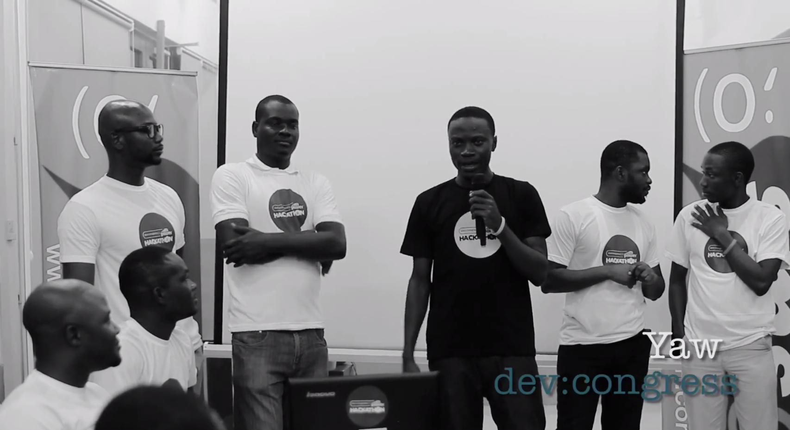

Hi, I am Yaw Boakye Yiadom. I am a programmer. I co-founded DevCongress for programmers. We organized the premier developers conference in Ghana, and the first ever ecommerce hackathon too (see picture). Also #eXchange and Forge.
I am on Linkedin and GitHub and looking for a job in San Francisco.
You can email me at wheresyaw@gmail.com